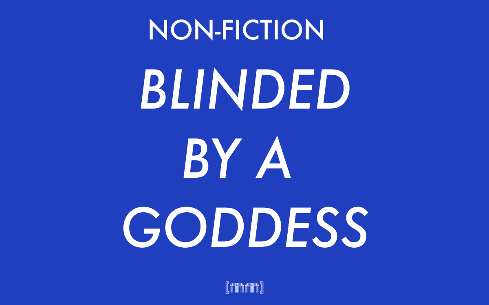

Non-fiction · English
Blinded by a Goddess
The ordeal of Guillaume Le Gentil and his decades-long attempt to observe the transit of Venus.
Once, when I was a child, I spent a few weeks at my aunt’s house. A lovely place, right in the middle of a Sardinian nowhere. My relatives were very nice to me. They offered me their guest room, a room with a stunning view over the island’s countryside. The landscape was breathtaking; birds would sing during the day and crickets at night within a dark black sky painted with stars I could only have dreamt of, growing up in a city. The wind was a pleasant companion, offering a fine soundtrack to the experience, shaking the leaves of the trees and everything.
It was perfect. Almost perfect. My room had been used as a laundry room in the past and was now refurbished for guests. My aunt had decided to keep a massive laundry sink in memory of the good old times, and so they did and there I was, ready to spend my first night as a guest at my cousins’.
The perfect, absolute silence of a country house.
Except, I would soon find out, for the constant leak of the tap. Precise, unstoppable, metronomical. Like an old clock, like Hook’s crocodile, like Chinese water torture. After fifteen minutes I was already going mad. I started tapping the head of the bed with my finger in sync with the sink. I timed when the drops would hit the ceramic, counting how long, how often, how many water drops would travel from tap to sink.
I couldn’t sleep. My mind was too busy. The sound, infuriating. I prayed for it to stop. It didn’t.
Right now it’s Friday 18 October 2013. It’s night, here in London. I’m sitting fully equipped in my garden, ready to get my hands dirty with scientific awesomeness. My trustworthy telescope has been meticulously set up, my laptop is providing the basic illumination for the whole experience, I have my winter coat on and I’m ready to roll. Ready ready ready. Yes. Tonight, as I probably should have mentioned before, a penumbral moon eclipse is expected, and with the new telescope I received for my birthday, it is time to roll up my astrophysics sleeves and observe the moon transiting through the edge of Earth’s shadow.
If London is a great city for business, entertainment and nightlife, it surely isn’t the greatest place to be if the kind of nightlife you are interested in includes sitting in the dark of your backyard during a coldish (for my Sardinian standards) night in autumn, looking up the sky and observing flying rocks and giant incandescent balls of gas. Now, if you have ever come across satellite pictures of Europe at night, you would see a super bright spot right where London is, and, it goes without saying, observing the sky under these conditions is less than ideal.
Furthermore, did I mention that above me the sky is completely covered with clouds? What started as a few scattered clouds, like the audience of a seventh division football club only two hours ago, has now turned into a cloud-crowd of the size of a World Cup final. Needless to say, no penumbral moon eclipse for me tonight. Bad luck, you say? Tell Guillaume Le Gentil.
It is easy to fall in love with a deity, especially when said deity is a beautifully charming immortal being that legitimately and deliberately seduces mortals. Born as sea foam, the goddess of encompassed love, beauty, prosperity and fertility has enchanted men and women for centuries. Greek and Romans built thousands of temples dedicated to her. They called her the Celestial; the Heavenly, or the Purifier. Long after her cult wore out, her charm remained intact. An untouched power of attraction that, after three thousand years, still shines as bright as when, in 1600 BC, the Babylonians named a star after her. It is the brightest object in the sky right before dawn and right before sunrise. For the Babylonians it was Ishtar, the personification of womanhood, with a dual role of goddess of love and war, presiding over birth and death. Although we still refer to it as “the morning star” we are actually talking about a planet of similar size, gravity and bulk composition to Earth. It’s Venus.
Like a beautiful, dangerous Greek siren, Venus lured French astronomer Guillaume Le Gentil as he decided to embark on a journey to track the transit of Venus around the Sun and help calculate the distance between the Earth and the star we revolve around.
In the early 18th century Edmond Halley, knowing that he would not live long enough to personally witness the transit of Venus across the Sun in 1761, wrote a ten-page essay suggesting the idea that a group of fellow astronomers take part in the observation from different places around the Earth. He wrote it in Latin to reach the largest audience he could. His intent was to calculate the distance of our planet from the Sun, using the position of Venus in the sky as the reference object.
Guillaume Joseph Hyacinthe Jean-Baptiste Le Gentil de la Galaisière left Paris in 1760 with destination Pondicherry, India. He sailed off the coast of France in March, knowing very well that a trans-oceanic trip was going to be neither easy nor pleasant. Le Gentil allowed himself plenty of time to comfortably reach his destination, build an observatory, observe the transit of Venus, take some measurements, do some maths, and finally pack his things up and make his glorious way back to France, proudly aware of the importance of his contribution to Science.
Before the construction of the Suez Canal, before the advent of modern technologies and before the wonderful invention we call the airplane, going from Europe to Asia meant having to circumnavigate Africa north to south and back up towards India. Le Gentil arrived at Île de France (named after the French district, and now known as Mauritius) four months later, in July 1760. It was a small token to pay though, as in exchange his name and those of his fellow colleagues would have been written in history. Their discoveries would be indispensable. Immortal tools to read the Universe, to understand what is outside our planet, to transform cosmology from mere star tracking to a more compelling and precise science that would include planets and orbits and provide precise measurements of outer space.
The 18th century has been a game-changer for human kind. When rational thought broke into everyday life, the scientific community grew stronger and became increasingly popular. Scientists were worshipped as innovative masterminds; discoveries were made on a daily basis. During the first half of the century, Samuel Johnson compiled the first English dictionary, and Denis Diderot created the Encyclopédie. The same century saw the invention of the microscope and more powerful telescopes.
I come from Sardinia, an island in the middle of the Mediterranean Sea. It is a fantastic place for holidays. Life is good, slow-paced, the weather is nice and usually, the company is good too. It’s a great place, except if you have to board a ferry to reach the mainland. Ask any Sardinian. The moment you mention it, they’ll cringe and foam at the mouth in the blink of an eye. The problem usually arises when you are forced to travel with your own car. You’re stuck with one option: a ferryboat. Tirrenia ferries ship from Cagliari, Sardinia’s capital city, and if everything goes smoothly, reach Civitavecchia (close to Rome) in roughly 13 hours. It’s an odyssey. Us Sardinians call it “The Journey of Hope” and compare it to some sort of mystical pilgrimage to reach Nirvana, when in reality it’s an unpleasant experience that only gets you to Rome. We all have stories of bad trips, but when the sea is calm and the sky at night is clear, you can go on the upper deck and admire the magnificent view of a sky illuminated by the moon and by thousands of little dots in the sky. The view that the ancient Greeks admired every night. The untamed striking picture of what us humans used to see every single evening, before the advent of the era of constant brightness, before living in a city became a perpetual daylight experience.
On a squeaky ferry travelling through the Mediterranean Sea, a primordial view, a priceless experience accompanied by a soundtrack of silence, darkness, the occasional wind on your face and the humid smell of sea that fills your lungs.
Two hundred and forty years before, Guillaume Le Gentil experienced the same silence while sailing off the shores of West Africa in the early summer of 1760, on a squeaky wooden ship softly rocking its way to India. The astronomer, eyes locked to a bright dot in the sky on a windless night in June.
The astronomer was a pragmatic optimist. On the vessel, he thought about the quick shift of perspective of human distances, by the immensity of our own planet, the difficulties of travelling around it, the long months spent on a ship that circumnavigates the African continent. He found himself immersed in solitude, driven only by the certainty of being a relevant piece of the majestic puzzle of scientific greatness.
Until the early seventeenth century, the only instrument available for observing the night sky was the naked eye. Three centuries later, technological expertise was catching up with scientific desire. The ideas proposed by Edmond Halley were truly revolutionary, not only technically, but also socially.
What the British astronomer proposed was as simple as it was ground-breaking: take measurements and share the results. Halley knew well that sending a considerable number of scientists around the world would have been hugely expensive, and that no sponsor would have paid the exorbitant costs of the mission. It would have been easier to dispatch a few astronomers per country. It would have reduced the costs and assured better results. As Halley stated, none of the measurements, if taken singularly, would be of any use. Cosmologists from France, Britain, Sweden, Russia and America decided to be part of it.
Organising the trip wasn’t the only problem. Clocks were not as precise as the modern ones, and there was no standardised timekeeping yet. Latitude and longitude on Earth weren’t homogeneous either. Correspondingly, there was no accurate measurement of the planet itself. Furthermore, countries disagreed on units of measurement too. A German mile was different from a British mile, and both were different from Austrian and Swedish miles. The French didn’t even use miles at all. They used leagues, and the length of one league differed from village to village.
What everyone agreed on was that the greatest degree of coordination was required. A sixmonth trip to India, plus the same time to go back to France, then send and receive the information gathered by the other astronomers around the world.
In the 18th century a 450-km road trip took six full days. The expedition was ambitious.
Travelling by sea was the only way to get to other side of the planet. Although circumnavigating the African continent was much further and indeed quite problematic, travelling by land was out of the question because of poor roads, elevated dangers and mostly, because of the Seven Years’ War.
The political situation in Europe in 1760 was unstable. While scientists were collaborating towards a common goal, their national armies were leaving blood baths behind their boots, fighting battles in Europe, Asia, America and Asia. Their wars extended to the Philippines and the Atlantic. The main contenders were the Hohenzollerns in Prussia, the Habsburgs in Austria, the British Empire, and the Bourbons in France, Spain and Italy. Political and economical power was at stake. There were several reasons for any European empire to declare war against their enemies: the main ones were having control over commercial routes, slave trades and colonies outside the Old Continent. Technological progress brought along better means of transportation, faster ships, bigger guns, stronger warfare. Everyone needed to show their superiority.
These were the starting conditions that this group of well intentioned – possibly naïve – scientists faced. Drop a pin on a world map of the 18th century, and with almost certainty, that place was at war.
Reaching India by road was impossible.
French astronomer Joseph Nicolas Delisle, Le Gentil’s mentor, was the sponsor and promoter of the expedition. After he got in contact with the very sparse international community of his time, he set up and organised the group. While Le Astronome de la Marine Delisle would have observed the transit of Venus from the Acadèmie des Sciences in Paris, his pupil would have studied it from Pondicherry, India. Everything had to be perfectly timed, well organised and precisely tuned. Being the “face” of the group, there was no room for mistakes. So five weeks before he even dispatched his working plan across the world, he put Guillaume Le Gentil, who had volunteered and insisted to be part of the expedition, on a ship.
On 26 March Le Gentil sailed from the Breton port of Brest and in spite of the deals and reassurance he had been given, during the first months of his journey, the thirty-four-year-old astronomer had to deal with two particularly bad situations. First, he didn’t handle the sea well. He suffered of constant seasickness for months. This condition debilitated him, forcing him to lie in his cabin for way longer than anyone would have humanly appreciated.
“Death would have been a relief,” he later wrote.
The second, and possibly more dramatic issue was that after he sailed off, international relationships between the British Empire and its French counterpart took a turn for the worse. The situation was so serious that the British East India Company had told the Royal Society to send its observers in different ships, contemplating the not-so-unlikely case one was attacked.
After the war moved to the sea, the British gave orders to engage any French ship they encountered.
In March 1760, two months after he had left the coast of France, Le Gentil’s vessel encountered a British ship. In order to escape they changed route and tried their best to leave the enemy behind. With great relief, they somehow managed to evade.
Le Gentil went back to spending some more quality time with his seasickness.
Right after sighting the Cape of Good Hope, Le Gentil noticed four enemy ships on the horizon.
They were still over five miles away, but the fast enemy vessels were closing in quickly. In previous days the French vessel had another close encounter with the British fleet. To avoid confrontation, they zigzagged around the ocean to bewilder them and stay at safe distance and escaped without having to fight. Now, they were about to encounter the Royal Navy again. Engaging the British ships was out of the question. Le Gentil’s vessel was outnumbered, and it had no chance of withstanding the enemy firepower. The count of cannons on board was also worrisome. The French ship had twenty-four, the two British vessels had sixty-four each. If they faced the British off, there would have been no more expedition, no more Pondicherry, no more Venus. They needed to get out of there quickly or become food for the fish.
The captain and his first officer ran on the deck to decide what to do. Retreating would also have being difficult. The situation was getting hopeless. The enemy, in spite of the strong wind, was under full sail, getting closer and closer.
Le Gentil felt a cold shiver down his spine. Everyone froze for a moment, their eyes locked to the British ships. For a second, there was complete silence on board. You could have heard the sound of their hearts beating. For just a moment, before the shouts started.
All sailors went back to their positions. Frantic instants of panic as the captain yelled orders at his crew. In mere seconds, the defence plan was ready. One of the enemy vessels was trying to move to port while the other headed starboard to sandwich the French ship. As Guillaume Le Gentil wrote in his journal “They were trying to place us between two fires”. An expression used, for once, with a terrifyingly literal meaning. It was a strenuous chase, an elaborate game. Like a herd of orcas, the British sea wolves were trying to wear out the bigger, slower French whale. The British fleet knew their opponent couldn’t keep such speed forever. Le Gentil needed a good strategy, knowledge, and a good slice of luck.
Fortunately, he had all three.
Though the more obvious move was to keep his telescope pointed at the enemies at sea, Le Gentil chose a different path. He had already proved himself willing to risk his own life for the sake of science, but it is indubitably a truth universally acknowledged that a man with a great deal of scientific knowledge must be in need of some luck. A black blanket of darkness covered the sky as night arrived and with it, the slice of luck Le Gentil was in desperate need of. He was fully covered on the knowledge side. On 29 May 1760, at 21.33, the moon eclipsed partially. One of those lucky, rare events you need when two enemy vessels are trying to sink you. Additionally, the weather conditions changed. The sky became foggy, it started raining heavily. As our planet slowly played hide-and-seek between the sun and the moon, the Earth’s shade hid our satellite. The French warship followed down the shadow and became completely invisible to the enemy, sailing away from almost certain death.
Le Gentil’s suggestions had worked. Cold blood, scientific knowledge and the unexpected allied he found in the bad weather saved the day. The ship disappeared into the night sky without a single scratch on it, and no loss of precious lives.
The cosmologist commented later in a letter he wrote to his family that “the fog seemed to been made for us.”
Everything went better than expected thanks to the unexpected help of some terrible weather. Except it turned out it wasn’t a complete blessing. The adverse conditions continued to afflict the vessel. Soon after, the strong winds destroyed the sails.
The ship continued its journey in particularly precarious conditions, passing the Cape of Good Hope and heading north into the Indian Ocean. As the astronomer remarked in a missive, “I feel better at sea than normally on land”, and got used to observing the sky “without tiring.”
On 11 July 1760, six weeks after escaping the British warships, Guillaume Le Gentil finally reached his first destination, Île de France.
Mauritius was an important strategic harbour for the French navy. Administered by the Compagnie des Indes, it had a lively shipbuilding industry and an important trading market. According to the original travel plans, the island was a simple stop. He was promised he would be able to find a ship to Pondicherry in no time. Ready for his next step, he wrote a letter to his family saying that everything was going as planned. Driven by a newly found optimism, he reflected on his journey, noticing that after all, they didn’t fire a single cannon ball during all those months and that they lost “only one man to sickness” and “one passenger who threw himself overboard.” He had got used to being at sea, and Pondicherry was only one more boat trip away. Yes, it took longer than predicted, but he still had plenty of time.
Two days later, the British Navy besieged the Indian city. News arrived with the rest of the French fleet that ruefully made its way back to Île de France.
“Twenty-five days ago, when we retreated after losing several vessels,” the captain said, “the enemy was conveying the artillery to Pondicherry with over three thousand men. The city is lost.”
Le Gentil was distraught. In spite of his optimistic pragmatism, it was impossible not to see that the mission was miserably failing.
Five months had passed since the astronomer arrived at Mauritius. He had lost his head start and he had no hope of leaving the island in a foreseeable future. The French cosmologist hated every waking moment on the island.
The quality of life degraded quickly.
If Le Gentil’s days were bad, the nights were worse. The humid air was a constant pain, his apartment was uncomfortable, and the high temperatures made sleeping difficult. Le Gentil felt weak, frustrated, constantly on the verge of fainting. He was struck down by a debilitating attack of dysentery. He would have loved a good glass of wine, but not only was the only wine available on the market horrible; he also had to cope with the speculation imposed by the sellers. With Pondicherry in British hands, very few supplies were reaching Île de France, and were sold by corrupt officials of the Compagnie des Indes at exorbitant prices.
“Life is horribly expensive,” he wrote in his journal.
As weeks went by, he grew increasingly nervous and restless. He was concerned about the expedition and worried that he had travelled to the southern hemisphere for nothing. Nevertheless, he was still optimistic and determined to see Venus parading in front of the sun.
Guillaume Le Gentil had been in Mauritius for longer than he had wished. It was time to abandon the idea of reaching Pondicherry and find an alternative. In a series of meetings with a French official also stranded on the island, the astronomer rattled off the various alternatives. Jakarta, for example, was better located than Île de France, but reaching the Indonesian city was impossible. Though it was one of the spots indicated by Nicholas Delisle in his calculation, and it was potentially suitable for observing the transit, during those long months not one French vessel had arrived in Île de France from Jakarta, or sailed to it. There was another option: Rodrigues, 560 km east of Mauritius. It was in French possession and easily reachable. The problem was that during the summer monsoon the sky over the island was constantly overcast because of humidity.
Le Gentil didn’t have many realistic options. “Here I am without hope,” he scribbled in his journal.
The Acadèmie had sent another scientist to Rodrigues: Alexandre-Gui Pingrè. Pingrè, a chubby forty-eight-year-old cosmologist and ordained priest with a particularly strong gout in his right foot, had started his journey on a bad note too. He wanted to embark over 800 pounds of luggage. He had telescopes, quadrants, manuals and books, all “indispensable.” After the captain refused to let him board the ship, he had to convince the Acadèmie to negotiate on his behalf. Unsurprisingly, the captain didn’t care much about Pingrè’s journey and kept him on shore for a month. When he finally managed to sail, he argued with the captain several times about the diet aboard, demanding “cheese, salted meat, bacon, pâté and wine,” as he was getting only one meal per day. Le Gentil didn’t have such problems, as all he was carrying was a box with some clothes, basic astronomical equipment, time-tracking devices and his notebooks.
After passing the Cape of Good Hope, Alexandre-Gui Pingrè was about to reach Le Gentil, who in the meantime was about to catch a ride to Rodrigues.
At the end of February, a vessel arrived at Île de France. It carried the order to send ships to Pondicherry as reinforcements. There weren’t really many ships available. The British had struck the French Navy hard, and a hurricane sunk several surviving vessels. When the governor gave the order to dispatch Le Sylphide to Pondicherry, Guillaume Le Gentil jumped aboard the ship and took his chance to get to India as he had originally planned.
On 11 March 1761, eight months after disembarking on an island that should have been just a quick stop, the cosmologist finally left Île de France.
The tables were finally starting to turn. Le Sylphide made a quick stop at Île Bourbon (now known as Rèunion) and proceeded full-sail for several days, heading northeast to Pondicherry. It was travelling fast enough to get to India and have enough time to settle down comfortably. Le Gentil’s morale, after many long months of suffering, grew more positive. For the first time since he left Europe, everything was going as planned.
A few days later, the French vessel hit the northeast monsoon. A strong constant wind kept pushing the ship towards Africa. Travelling in a straight line became impossible. Le Sylphide fought in vain against the wind. Days went by, and then weeks, and then a month. Thirty-six days before the transit, Guillaume Le Gentil was over 4,000 kilometres away from the coast of India. Two weeks later they reached Mahè, on the opposite coast of the Indian peninsula. Le Gentil had only 14 days to circumnavigate India and reach his destination. The French ship headed south at full speed, but before they could get much further, two English vessels stopped the ship. When two British officials went aboard, Le Gentil showed the papers provided to him by the Royal Academy, explained the reason for his journey and the scientific importance of the expedition. The two officials gave him a letter written by the governor of Mahè that said that the British Navy had taken the port and no vessels waving a flag other than British could have any access in the port.
If he had decided to go to Rodrigues, he would have met Pingrè. Right before Le Gentil hitched the ride on Le Sylphide, Pingrè was begging the captain of Le Lys, the vessel he was in, to let him disembark at Rodrigues. He supplicated him and he threatened him, but with no luck. When Pingrè explained “the holiness of his mission,” he received a very uninterested response. The captain, diplomatically, first tried to appease the cosmologist with fresh meat and fruit, then, after losing his temper, he pulled the serious threat of “throwing him overboard.”
Despite Pingrè’s desperation, Le Lys sailed past Rodrigues and continued its journey to Île de France. After spending a few days on the island, the governor – probably used by then to coping with astronomers’ needs – put Pingrè on a ship and sailed him back to Rodrigues. He was running dramatically short of time. He reached the island a week before the transit, but he had no time to build a decent observatory. He complained that his very expensive equipment had been “eaten by rust.”
6 June 1761
When the transit started, it was still night in Europe. Cosmologists there would have only seen the exit. Americans would have missed it completely. The South Asian position was the most favourable. The whole scientific world was ready and excited, the buzz grew stronger and the hype louder. International cooperation was the key. Nobody’s measurements would have been useful without those taken at different latitudes. Halley’s dream and Delisle’s organisation were soon going to be put to the test.
Andrea Wulf, in Chasing Venus: The Race to Measure the Heavens, explains how solar parallax works:
“What the scientist hoped to extract from this data was the solar parallax: they key to the size
of the solar system. A parallax is the difference or shift in position of one object when viewed
from two different lines of sight. The solar parallax is measured as the angle (or to be precise
half the angle) between these lines drawn from two different locations on opposite sides of
the earth to the sun.”
It is the same difference in perspective that happens when looking at an object closing first one eye and then the other. Using simple trigonometry, scientists could use the measurements taken by the cosmologist to sub-sequentially calculate the distance from the Earth to the Sun using two possible methods: the difference of time measured when observing the entry or exit times from different latitudes, or the total duration of the transit measured from different points on the planet.
The predictions of the Academie des Sciences were wrong. Alexandre-Gui Pingrè had been in the area around Rodrigues for 104 days and, according to the French institute, the weather was going to be mostly good. Pingrè had counted 93 days of rain since he reached the region.
On 6 June, he woke up to the sound of rain hitting his shed. Heavy rain. During the previous days, he had set up the best observatory he could, repaired his pendulum, positioned his telescopes on the ground and got ready for the measurements. He went outside at 6 a.m. and all he could see was clouds. When the sky cleared, Venus was already transiting the sun. He had lost the entry, but if the sky cleared he could measure the exit. Miraculously, it did. Pingrè focused his telescope and, together with his assistant and the captain of the ship that brought him there, started his measurements. Hours passed. At 12.53 and eighteen seconds, a cloud covered the sun. One minute later, Venus was gone. The strong wind disordered his instruments. A cloud banged the last nail on the transit coffin. Pingrè’s measurements were unusable.
That day on the Indian Ocean, the sky was perfectly clear. Not a single cloud was obstructing the view. It was the ideal weather for observing the transit. Everything was perfect, except for that one little detail. Guillaume Le Gentil was on a rocking ship in the middle of the ocean, headed back to Île de France. He couldn’t provide a precise location, nor use his pendulum, as the movement of the boat made it imprecise and unreliable. Being the resolute man he was, he didn’t panic and decided to do the best that he could, given the starting conditions.
As the goddess appeared in the sky, Le Gentil used a sailor to turn a thirty-second sandglass over and over until Venus had eventually left. He observed, not knowing the exact time the transit would start and when the planet finally showed up on the sky the astronomer’s eyes were already tired. Focusing was impossible: the telescope lost focus every time the ship hit a wave. He missed the entry.
He helplessly observed the planet cat-walking through our star, until clouds appeared in the sky. He thought he had lost the exit. When the sky cleared, Venus was still there. He took more measurements and, according to his very erratic instruments, at 2.27 p.m. Venus waved goodbye, “touching the edge of the sun,” and moved back to the sidereal darkness.
At the same moment in Pondicherry, British officials grabbed their telescopes and observed Her Majesty Venus showcasing over our domestic star. None of them bothered checking the time of entry and exit.
After a year and a half of sacrifices, sea sickness and poor wine, Guillaume Le Gentil glimpsed Venus in all her charming beauty, and, sitting on the deck of a ship thousands of miles away from his home, had to declare defeat. His measurements were too imprecise. None of it was usable.
His journey had been a failure.
That night, Pingrè toasted to science and life with his travel companions, celebrating the mission and the fact that though he failed, others succeeded. Le Gentil repacked his equipment slowly and carefully, went back to his cabin, and there he sat and wept.
Four years passed since the major failure of the first mission. After Le Sylphis took Le Gentil back to Île de France, he decided to use the island as a starting base. In agreement with the Acadèmie he decided to stick around and observe the 1769 transit. For four years he travelled around the south Indian Ocean and provided an indispensable contribution to mapping that part of the world. He sailed to Madagascar and the Philippines, and calculated the exact position of several islands, studied the wind pattern and created new, safer travel routes. In 1765, he decided it was time to move on and planned his next journey to observe Venus.
The best spot was Manila, in the Philippines. There weren’t many ships going there. The easier ways was to catch a ride on a Compagnie des Indes ship travelling to China, and then find a vessel to Manila. Once again, he had a head start. In January 1766 he asked the Academie des Sciences for a recommendation letter for the governor. A few days later, a ship harboured in. Not only it was bound for Manila, but the captain was also an old friend of Le Gentil and he had no problem helping the astronomer’s cause. Surprised by the turn of luck, he packed his belongings and went back to sea. More a breeze than a blow, the blinded goddess was once again hard at work to sabotage the cosmologist. A “horrendous storm” hit the vessel and pushed it dangerously close to the coast of the Philippines. The ship became uncontrollable. The storm grew stronger. The captain’s plan was as simple as it was inefficient: the only things left to do were “prayers and alms.” Despite the desperate plan and the lack of optimism of the man in charge, the ship somehow managed to arrive in Manila intact.
Happy to step on solid ground again, Le Gentil used his admirable willpower and promptly built an observatory in the capital of the archipelagos. As he wrote in a letter to a friend, the cosmologist declared himself “determined to suffer anything” to see the transit. And things were once again positive. The observatory was ready. With newly found optimism, he calculated the latitude and longitude of Manila and, for the first time in several years, disassembled all his instruments, deep-cleaned them and reassembled them. After all, his beloved tools had suffered the same fate he had. They too didn’t complain much about the adverse luck, but they certainly didn’t mind a nice coat of lubricant every now and then, just to feel appreciated and loved.
In June 1767 the astronomer received a letter from the Acadèmie. According to Pingrè’s calculations, Manila was too far east to assist the transit. The French institution was not going to support his permanence in the Philippines, and the letter instructed him to relocate to Pondicherry, India.
“Merde,” he couldn’t help but think. Le Gentil had made some calculations too, and he was sure the transit was going to be visible from his current location. On the other hand, the Spanish governor was a difficult person to deal with. The weather in Manila was perfect – in ninety days it had been partially clouded only three and it never rained either – but again, disobeying a direct order would have meant losing his job, his career and ultimately, wasting a decade. With stoic optimism, in February 1768 he packed his belongings one more time and once again, took the sea with destination Pondicherry. It was one and a half years before the transit.
Since 1761 the political situation had soothed in Europe. France and Britain shook hands and signed a treaty. The diplomatic relationship between the two nations became peaceful and overall collaborative. In the specific case, Pondicherry had been given back to France. This was one of the reasons why the Acadèmie wanted Le Gentil in India. The Spanish were unreliable and treated foreign scientists erratically. When French dignitaries asked permission to observe the transit from Spain, they had been firstly mocked then accused of wanting to use the transit as an excuse to spy on them. Spanish scientists, until then completely uninterested in the transit, remarked that they wanted no foreigners around as they were more than capable of taking measurements themselves. Trapped again in a diplomatic row, Le Gentil left Manila wishing for heavy rain over it on the day of the transit.
As there is no rose without thorn, there was no ship journey for Le Gentil without a serious risk of shipwrecking and losing his life. What started as a nice, smooth trip in a sea that “looked like a lake” turned into a nightmare when the wind picked up and pushed the ship between an island and a sandbank. The cosmologist had to face one more time the prima donna attitude of a captain. He and the first officer decided it was the right time to point fingers at each other’s navigation, so they did what seemed to be the most illogical choice of them all: when they couldn’t find an agreement, they raged back to their cabins and left the ship pilotless. In panic, Le Gentil stormed around the ship looking for someone who could take the boat out of danger and, failing to find anyone capable, he ran back to the tiller and took control of the ship, bringing it to safety. Then he dropped down on the captain’s chair and sighed with relief.
The journey continued with no other problems.
The vessel harboured in Pondicherry on 27 March 1768, exactly eight years to the day the astronomer had sailed from France. “There could not be a more fortunate journey than ours,” he later wrote, ignoring the numerous occasions in which he risked his life, or the years he remained stranded on small islands, or the arrogant unpredictable relationship with governors and the Acadèmie, or simply the fact that he should have reached Pondicherry in less than six months but now he was stepping on Indian soil for the first time eight years later. However, Guillaume Le Gentil was exclusively focusing on setting up his observatory and getting ready to see the goddess of love showcasing in front of his eyes. He had finally reached his destination.
Le Gentil took over the ruins of a fortress partially destroyed by the British during the Seven Years’ War. With the blessing of the French governor and a team of several builders and carpenters, in a few months the astronomer had his observatory ready. It had a large hall at the top floor, with windows all around, a spacious terrace, and enough room for telescopes, pendulums, gears and books; the carpenters had also been kind enough to turn the rooms on the bottom floors into a spacious apartment at Le Gentil’s disposal.
“I enjoyed at Pondicherry that sweet peace which is the support of the muses. I was more in touch with my work there.”
The common destiny of those who spend their lives looking at the stars is that they usually don’t notice what happens below their feet. The Greek philosopher Thales of Miletus, for instance, became increasingly obsessed with the observation of the stars and the possibility of using them as a compass in the night sky. Walking on the street while observing Ursa Minor, he allegedly fell into a well. Guillaume Le Gentil set up his observatory, positioned his telescopes sturdily on the floor and spent most of his time with his nose up, glancing at the morning star and thinking about the long years he spent away from home. Le Gentil kept looking up whilst sitting on a gunpowder vault, and he didn’t seem too bothered about it. Under his observatory, the French army had stacked up 2.7 tons of gunpowder. Despite his notorious bad luck, the astronomer was not concerned about sleeping above a giant bomb. Thankfully, this time around nothing bad happened.
Le Gentil settled down in Pondicherry and appreciated life there. His journey “from ocean to ocean, from coast to coast” had been worth the trouble.
3 June 1769
The astronomical community was thrilled. The best cosmologists from old Europe and the new Continent had been sent around the world to observe the transit of the goddess of love and beauty in front of our star. Scientists in Canada, Norway, Tahiti, India, California, and the Arctic Circle were ready to point their telescopes at the sun. The next transit would not be until 105 years later, in 1874.
The sky above Pondicherry had been clear for over a month. The climate was perfect. The starting conditions, for once, were favourable. Everything was ready. In fact, everything had been ready for nine years, when Le Gentil’s odyssey first began. The night before the transit, the astronomer called the French governor up to the observatory, and together they pointed the telescope at Jupiter. They could clearly see the satellites rotating around the biggest planet of our solar system. It was stunning. It was the wonderful show the universe presents to those who look at it. The fantastic gift offered by the darkness. Moreover, it was a scientific triumph. Centuries of technological development, and improved, better instruments; a chill ran down Le Gentil’s spine while he observed a planet so far from us. The day after, everything was going to be perfect. Guillaume Le Gentil had chased Venus for long enough.
He went to bed, he said, “with my soul content.”
At 2 a.m. the sound of the sandbanks woke him. He rushed to look outside. The sky, which had been clear for over a month, the same sky that had been clear as a mirror only few hours before, was covered with a thick blanket of clouds. “From that moment on, I felt doomed.” There was no wind. Everything was calm and silent, like it was before he went to sleep. As he stood there in desperation, the hours slowly passed. He stood at his window, listening to the sound of nothing, agape at the deafening silence of Pondicherry. He wished for wind, he prayed for some breeze, and for hours none of his prayers were heard. At 5 a.m., like a sick joke of destiny, a small breeze gave him new hope. Heartened by it, he thought that maybe not everything was lost. Perhaps there still was a chance. Five minutes after, the wind changed, picked up sand and debris and turned into a squall. A furious wind rose, carrying a second layer of clouds with it, so thick it completely covered the rising sun. Le Gentil roamed restlessly around the observatory like a cat in a closet. The sun rose, and he couldn’t see it. One hour later the storm finished, leaving a dark grey layer of clouds as a legacy. The sun was nowhere to be seen. Soon after 7 in the morning, Venus concluded her stroll over the face of the sun and carried on her journey around it. The transit was over, and Le Gentil had seen absolutely nothing. To add insult to injury, after half an hour the clouds thinned, the sky cleared up and a nice, warm, shiny sunny day greeted the city of Pondicherry.
“I had difficulty in realising that the transit of Venus was finally over,” he wrote. Fate seemed to have played a terrible game with the French astronomer, dragging him around the globe, threatening his life on numerous occasions, and leaving him stranded on islands for months at a time, only to deceive him, give him hope and then trick him once again.
At 8 in the morning of 3 June 1769, after nine years of desperate tries and useless optimism, the mission of Guillaume Le Gentil to track the transit of Venus around the sun had officially failed. He did all this “only to be the spectator of a fatal cloud.” At the same time, in Manila, the transit had been perfectly visible in all its beauty, thanks to a warm sunny day without a single cloud in the sky.
Two weeks went by before Guillaume Le Gentil could find the strength to plan his journey back home. For two weeks, he remained in his observatory and thought about everything he did, about his ordeal and his misfortunes, and couldn’t help but think himself cursed. After all those years, after all the sacrifices, he would have to go back home with nothing to show. During those two terrible weeks, he couldn’t even find the strength to write back to the Acadèmie and explain what happened. The tragedy of the scientific failure had hit Le Gentil hard. His famous optimism was gone, eclipsed into a sidereal darkness like Venus after the transit. While the scientists started gathering the first data from the observations in Europe, Le Gentil prepared his journey plan to go back home.
Before he left Pondicherry, he received a letter from one of his attorneys: his heirs wanted to divide up his estate and his money after spreading the rumour Le Gentil had died. Furious, the astronomer decided to hasten his return home. Once again, destiny was playing a chasing game with the cosmologist. He had been cheated by his own family. He had to rush to France, but there was a problem: all his belongings of nine years were in Île de France. Some of his astronomical equipment had been left there for safekeeping, as well as his natural history collections, the original maps he created and all the books and manuals he gathered during his journey.
Before he could even find a passage on a ship to Mauritius, days, then weeks, then months passed. During this time, Le Gentil faced the serious risk of not leaving Pondicherry at all. He was hit by several attacks of dysentery, a few of them strong enough to put his life in peril. After he got better (many months later), a vessel with destination Île de France finally transited in Pondicherry. Le Gentil grabbed his suitcases and jumped aboard. He left India on 1 March 1770.
Six weeks later, he was back at Mauritius. After his arrival, he packed the remaining of his belongings, put them on board, and finally left Île de France, he thought, for good. Little did he know that his ridiculous stroke of bad luck was not going to cease. A hurricane hit the vessel, forcing it back to the island. The ship was heavily damaged and couldn’t handle a transoceanic trip. By then, the astronomer had lost all hope of going back home ever again.
“The sight of Mauritius,” he wrote, “had become unbearable.” He hated the island, and yet he was forced to spend another year there. Almost two years after the transit, the astronomer finally boarded a ship to France. He took with him eight boxes, a surprisingly large amount for a man who had left France with few changes of clothes and some essential astronomical tools. After passing the Cape of Good Hope, Le Gentil faced what he thought was going to be the final storm of his life. “The sea was more wild than I had ever seen before.” With nothing left to do, he went back to his cabin, lay on his bed and patiently waited to die. To his surprise, he didn’t. If bad luck took him to the verge of death way too many times, the same blinded-goddess saved him from storms and aboutto-sink ships every time. This occasion was no different.
On 1 August 1771, over three years after the transit, he disembarked in Cadiz, Andalusia. He had had enough of travelling by sea. “I was so tired of it”, he wrote in a letter. Reaching Europe was a conquest for him. After eleven years of demanding travels, the simple fact of being back in Europe re-heartened his spirit. He would be home soon – or relatively soon.
On his journey back to Paris, he spent his time thinking about his loved ones, his job, his career, and his life. He who once was an optimistic, resolute person was returning home as a broken man, but it didn’t matter, as he was going back to his life. He was going back to life.
When he arrived in Paris, a few more surprises were waiting for him. He arrived at his estate on a rainy day in late autumn. There, he met the new owners of his house. His heir had sold it while he was away. Feeling cheated and betrayed, he tracked down his family. In his absence, his sons had succeeded in their goal. Guillaume Le Gentil, away from home for over eleven years, had been declared dead in absentia. His wife had remarried, everything valuable among his possessions sold and all the astronomical equipment given away. The cosmologist arrived in Paris to discover himself dead, jobless and completely broke. He had lost job, house and wife, along with everything he had ever owned.
I was 10 the first time I saw a night sky the way it deserved to be admired. I went out camping on the Sardinian mountains. We mounted our tents several kilometres away from the closest town and we indulged in the beauty of one of those calm summer nights that reminds you why it is worth living in the universe we are part of. It was an imprinting. A sidereal perfection. It was one of those nights when time seems to have stopped, and there is a lazy summer breeze that hits you and you can almost hear the universe talking to you.
Now, I live in a world of perpetual light.
I packed my telescope and brought it back indoors and went to bed. There is a streetlamp next to my bedroom window, so it’s never really dark there. As I lay awake in bed, I think that being blindsided by gods is both stunning and terrible. Mortals cannot win their love, only admire them from a distance, charmed by their beauty like magnificent planets in the sky, and hope they will gaze back and bless you. Being charmed by science is both stunning and terrible too. Like Pythagoras and Newton, the names of those who succeed are written forever in golden letters in the Olympus of knowledge. Their discoveries, eternal. Their contribution indispensable. For every scientific success there are thousands and thousands of failures, all of them also essential. Knowledge comes from every attempt, from every idea, from every try. It comes from those who are willing to try, and to risk.
Guillaume Le Gentil risked his own life to be part of something he considered significant. He doubled up and busted and he kept trying.
After the king’s intervention, Le Gentil was re-declared alive and obtained his job back at the Acadèmie of Sciences. His crucial geographical contribution helped save the lives of those who sailed the Indian Ocean. Using his knowledge of the cosmos, he provided important data used for navigating during the following century.
Le Gentil had discovered that being blinded by the charm of a goddess doesn’t mean losing your sight. Sitting on a bench in his garden in Paris, he stared at the sun for a brief moment, shielded off his face with his hand, looked away, and smiled.
Bibliography
Bryson, Bill, A Short Story of Nearly Everything (London: Black Swan, 2004)
Ferris, Timothy, Coming of Age in the Milky Way (London: Harper Collins, 2010)
L’Acadèmie Royale des Sciences, Histoire de l’Acadèmie des Sciences Avec les Mèmoires de Matematique & de Physique (Paris: Acadèmie des Sciences, 1761)
Le Gentil, Guillaume, Voyage dans le mers de l’Inde (Paris: Acadèmie des Sciences, 1779 and 1781)
Stevens, Michael, ‘How People Disappear’ in Vsauce <http://bit.ly/1kSnsbq> [Accessed 12 April 2014]
Wright, Michael, ‘The Ordeal of Guillaume Le Gentil’ in Sidereal Times <http://bit.ly/1ej3dFg> [Accessed 3 February 2014]
Wulf, Andrea, Chasing Venus: The Race to Measure the Heavens (London: William Heinemann, 2012)